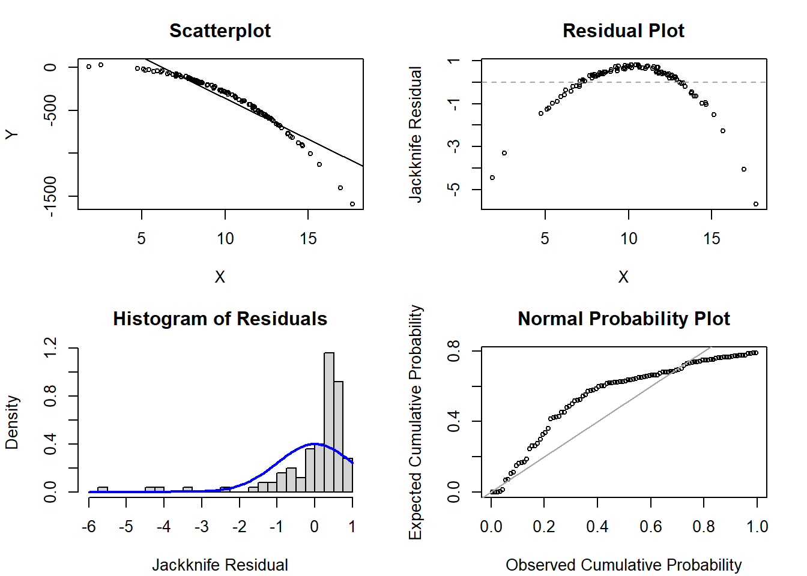
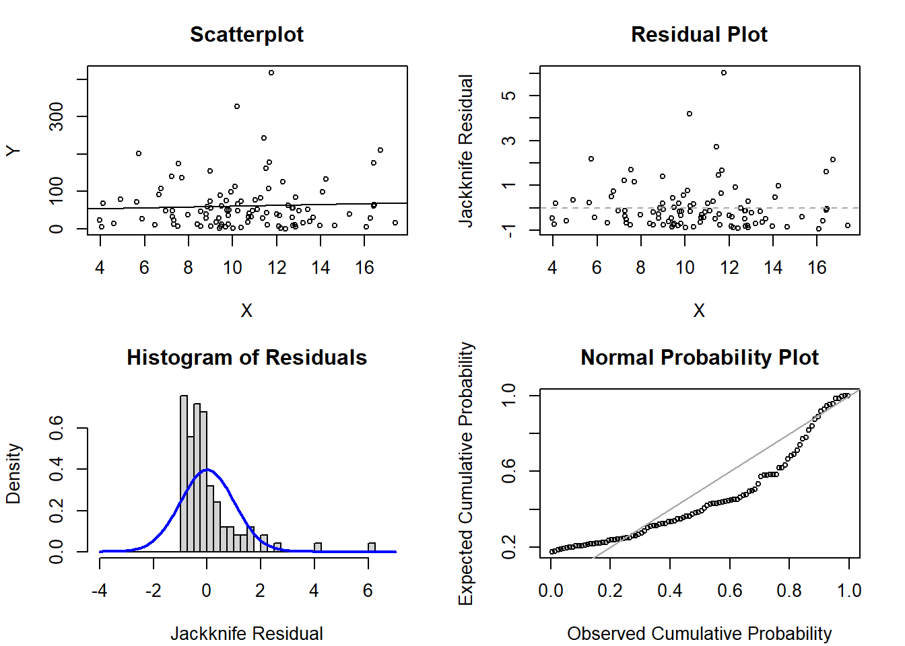
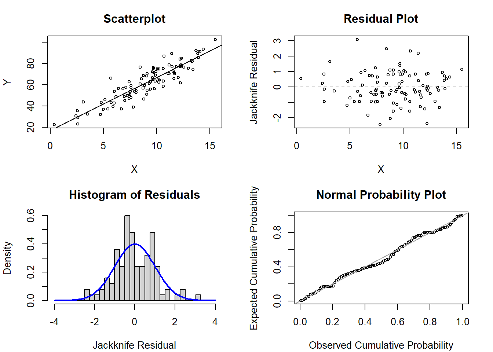
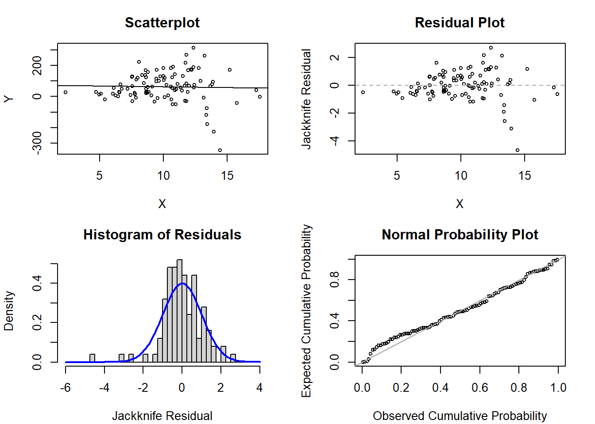
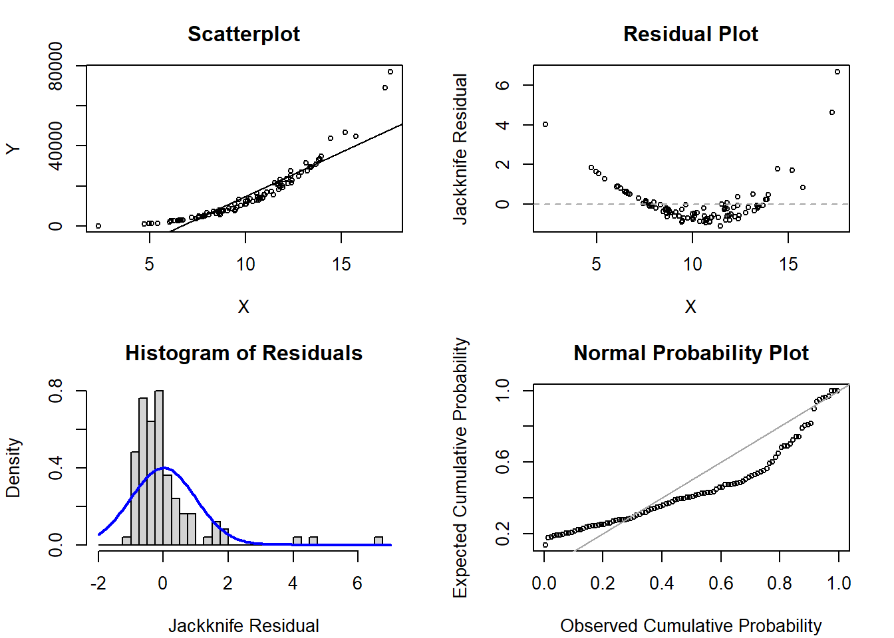

This page includes the solutions to the optional practice problems for the given week. If you want to see a version without solutions please click here. Data sets, if needed, are provided on the BIOS 6618 Canvas page for students registered for the course.
This week’s extra practice exercises are focusing on examining the diagnostic plots for various regression models simulated to violate various regression assumptions. The interpretation of models with transformations are also explored for further practice.
Exercise 1: Diagnostic Examination
For each of the following sets of plots, identify which, if any, assumptions may be violated for the simple linear regression model.
1a. Scenario 1
Code
# Code to generate figures for violation of linearityset.seed(303)x <-rnorm(n=100, mean=10, sd=3) # simulate a single continuous predictor with mean=10 and SD=3reg <-15+5* x -1* x^2-0.25* x^3# set the regression equation so the intercept=10 and the slope=3y <-rnorm(n=100, mean=reg, sd=8) # simulate the outcome based on the conditional meanmod1 <-glm(y ~ x)par(mfrow=c(2,2), mar=c(4.1,4.1,3.1,2.1))plot(x=x, y=y, xlab='X', ylab='Y', main='Scatterplot', cex=0.7); abline( mod1 )plot(x=x, y=rstudent(mod1), xlab='X', ylab='Jackknife Residual', main='Residual Plot', cex=0.7); abline(h=0, lty=2, col='gray65')hist(rstudent(mod1), xlab='Jackknife Residual', main='Histogram of Residuals', freq=F, breaks=seq(-6,1,0.25)); curve( dnorm(x,mean=0,sd=1), lwd=2, col='blue', add=T)plot( ppoints(length(rstudent(mod1))), sort(pnorm(rstudent(mod1))), xlab='Observed Cumulative Probability', ylab='Expected Cumulative Probability', main='Normal Probability Plot', cex=0.7); abline(a=0,b=1, col='gray65', lwd=1)

Solution:
The plots show a clear departure from our assumption of linearity with the quadratic-type trend in the scatterplot and residual plot. Due to this departure of linearity, we also see normality is grossly violated in both the histogram of residuals and the normal probability plot.
In fact, if we examine the code we see that the true data generating mechanism assumes a cubic trend: \(Y = 15 + 5X - X^2 - 0.25X^3 + \epsilon\).
1b. Scenario 2
Code
# Code to generate figures for violation of normalityset.seed(515)x <-rnorm(n=100, mean=10, sd=3) # simulate a single continuous predictor with mean=10 and SD=3reg <-15+5* x # set the regression equation so the intercept=10 and the slope=3y <-rexp(n=100, rate=1/reg) # simulate the outcome based on the conditional meanmod1 <-glm(y ~ x)par(mfrow=c(2,2), mar=c(4.1,4.1,3.1,2.1))plot(x=x, y=y, xlab='X', ylab='Y', main='Scatterplot', cex=0.7); abline( mod1 )plot(x=x, y=rstudent(mod1), xlab='X', ylab='Jackknife Residual', main='Residual Plot', cex=0.7); abline(h=0, lty=2, col='gray65')hist(rstudent(mod1), xlab='Jackknife Residual', main='Histogram of Residuals', freq=F, breaks=seq(-4,7,0.25)); curve( dnorm(x,mean=0,sd=1), lwd=2, col='blue', add=T)plot( ppoints(length(rstudent(mod1))), sort(pnorm(rstudent(mod1))), xlab='Observed Cumulative Probability', ylab='Expected Cumulative Probability', main='Normal Probability Plot', cex=0.7); abline(a=0,b=1, col='gray65', lwd=1)

Solution:
The plots show normality appears to be violated based on the histogram of residuals and the normal probability plot. There may also be some extreme outliers with jackknife residual values above 2.
In fact, if we examine the code we see that the true data generating mechanism assumes exponentially generated data for the errors instead of normal data.
1c. Scenario 3
Code
# Code to generate figures for no violationsset.seed(720)x <-rnorm(n=100, mean=10, sd=3) # simulate a single continuous predictor with mean=10 and SD=3reg <-15+5* x # set the regression equation so the intercept=10 and the slope=3y <-rnorm(n=100, mean=reg, sd=8) # simulate the outcome based on the conditional meanmod1 <-glm(y ~ x)par(mfrow=c(2,2), mar=c(4.1,4.1,3.1,2.1))plot(x=x, y=y, xlab='X', ylab='Y', main='Scatterplot', cex=0.7); abline( mod1 )plot(x=x, y=rstudent(mod1), xlab='X', ylab='Jackknife Residual', main='Residual Plot', cex=0.7); abline(h=0, lty=2, col='gray65')hist(rstudent(mod1), xlab='Jackknife Residual', main='Histogram of Residuals', freq=F, breaks=seq(-4,4,0.25)); curve( dnorm(x,mean=0,sd=1), lwd=2, col='blue', add=T)plot( ppoints(length(rstudent(mod1))), sort(pnorm(rstudent(mod1))), xlab='Observed Cumulative Probability', ylab='Expected Cumulative Probability', main='Normal Probability Plot', cex=0.7); abline(a=0,b=1, col='gray65', lwd=1)

Solution:
These plots are simulated to have no violations of the assumptions. And, across the 5 scenarios, they generally look the best. However, it is worth highlighting that humans are super good at finding patterns and one may be worried that there isn’t “perfect” normality in the histogram of residuals and the normal probability plots.
1d. Scenario 4
Code
# Code to generate figures for violation of homoscedasticityset.seed(660)x <-rnorm(n=100, mean=10, sd=3) # simulate a single continuous predictor with mean=10 and SD=3reg <-15+5* x # set the regression equation so the intercept=10 and the slope=3y <-rnorm(n=100, mean=reg, sd=x^2) # simulate the outcome based on the conditional meanmod1 <-glm(y ~ x)par(mfrow=c(2,2), mar=c(4.1,4.1,3.1,2.1))plot(x=x, y=y, xlab='X', ylab='Y', main='Scatterplot', cex=0.7); abline( mod1 )plot(x=x, y=rstudent(mod1), xlab='X', ylab='Jackknife Residual', main='Residual Plot', cex=0.7); abline(h=0, lty=2, col='gray65')hist(rstudent(mod1), xlab='Jackknife Residual', main='Histogram of Residuals', freq=F, breaks=seq(-6,4,0.25)); curve( dnorm(x,mean=0,sd=1), lwd=2, col='blue', add=T)plot( ppoints(length(rstudent(mod1))), sort(pnorm(rstudent(mod1))), xlab='Observed Cumulative Probability', ylab='Expected Cumulative Probability', main='Normal Probability Plot', cex=0.7); abline(a=0,b=1, col='gray65', lwd=1)

Solution:
There appears to be non-constant variance in the scatterplot and residual plot, where larger values of \(X\) have greater variability. Otherwise, the histogram of residuals and normal probability plot are not terrible, but they do have some perturbations that are likely based on some of these more extreme values.
In reviewing the code, we can note that the error standard deviation (in this set-up, represented by the rnorm for y) is not constant but varies directly with the observed value of x to be squared.
1e. Scenario 5
Code
# Code to generate figures for violation of homoscedasticity, linearity, and normalityset.seed(660)x <-rnorm(n=100, mean=10, sd=3) # simulate a single continuous predictor with mean=10 and SD=3reg <-15+5* x +0.5* x^2# set the regression equation so the intercept=10 and the slope=3y <-rgamma(n=100, shape=reg, scale=x^2) # simulate the outcome based on the conditional meanmod1 <-glm(y ~ x)par(mfrow=c(2,2), mar=c(4.1,4.1,3.1,2.1))plot(x=x, y=y, xlab='X', ylab='Y', main='Scatterplot', cex=0.7); abline( mod1 )plot(x=x, y=rstudent(mod1), xlab='X', ylab='Jackknife Residual', main='Residual Plot', cex=0.7); abline(h=0, lty=2, col='gray65')hist(rstudent(mod1), xlab='Jackknife Residual', main='Histogram of Residuals', freq=F, breaks=seq(-2,7,0.25)); curve( dnorm(x,mean=0,sd=1), lwd=2, col='blue', add=T)plot( ppoints(length(rstudent(mod1))), sort(pnorm(rstudent(mod1))), xlab='Observed Cumulative Probability', ylab='Expected Cumulative Probability', main='Normal Probability Plot', cex=0.7); abline(a=0,b=1, col='gray65', lwd=1)

Solution:
Wow…so much to say about these figures. We have stumbled upon the holy grail of assumption violations, since this data was simulated to violate homoscedasticity, linearity, and normality.
We see that there is a non-linear trend in the scatterplot and residual plot. Further, we see that the variability appears to increase slightly as the values of \(X\) increase. Finally, the histogram of residuals and the normal probability plot are decidedly non-normal.
These findings are not surprising when we look at the data generating mechanism in the code. It assumes a quadratic relationship between \(X\) and \(Y\) (i.e., \(E(Y)=15 + 5X + 0.5X^2\)), while using a gamma distribution to simulate the errors with the observed value of \(X^2\) directly used as the scale parameter.
Exercise 2: Data Transformation Interpretations
We will use the blood storage dataset from our course site:
Code
dat <-read.csv('../../.data/Blood_Storage.csv')
The dataset includes 316 men who had undergone radical prostatectomy and received transfusion during or within 30 days of the surgical procedure and had available PSA follow-up data. Of the 316 men, 307 have data for prostate volume (in grams) and age (in years).
For each of the following models for the outcome of prostate volume and a single predictor of age, what are the estimates of the intercept and slope and how would you interpret them? If possible, for transformations of the dependent variable, \(Y\), also transform the estimate of your slope and its 95% confidence interval back to its non-transformed scale and interpret.
2a. \(Y\), \(X\)
Code
summary(lm(PVol ~ Age, data=dat))
Call:
lm(formula = PVol ~ Age, data = dat)
Residuals:
Min 1Q Median 3Q Max
-39.527 -15.817 -4.367 6.451 205.105
Coefficients:
Estimate Std. Error t value Pr(>|t|)
(Intercept) -13.3823 14.1790 -0.944 0.346
Age 1.1443 0.2308 4.959 1.18e-06 ***
---
Signif. codes: 0 '***' 0.001 '**' 0.01 '*' 0.05 '.' 0.1 ' ' 1
Residual standard error: 29.1 on 305 degrees of freedom
(9 observations deleted due to missingness)
Multiple R-squared: 0.07461, Adjusted R-squared: 0.07158
F-statistic: 24.59 on 1 and 305 DF, p-value: 1.178e-06
Solution:
The intercept of -13.38 is the mean of prostate volume in grams if age is 0 (which is extrapolating beyond the range of our data and is not really biologically meaningful anyway since it would represent a newborn, further the estimate is negative).
The slope is the average increase in prostate volume for a one year increase in age. In our problem, it represents that prostate volume increases on average by 1.14 grams for a one year increase in age.
For this problem, there is no need to transform the data back to the original prostate volume scale since that is already the outcome.
2b. \(log(Y)\), \(X\)
Code
summary(lm(log(PVol) ~ Age, data=dat))
Call:
lm(formula = log(PVol) ~ Age, data = dat)
Residuals:
Min 1Q Median 3Q Max
-0.85316 -0.25833 -0.02639 0.18992 1.56272
Coefficients:
Estimate Std. Error t value Pr(>|t|)
(Intercept) 2.83345 0.18124 15.63 < 2e-16 ***
Age 0.01820 0.00295 6.17 2.17e-09 ***
---
Signif. codes: 0 '***' 0.001 '**' 0.01 '*' 0.05 '.' 0.1 ' ' 1
Residual standard error: 0.3719 on 305 degrees of freedom
(9 observations deleted due to missingness)
Multiple R-squared: 0.111, Adjusted R-squared: 0.108
F-statistic: 38.07 on 1 and 305 DF, p-value: 2.169e-09
Code
# confidence interval to use in back-transformationconfint(lm(log(PVol) ~ Age, data=dat))
2.5 % 97.5 %
(Intercept) 2.47681662 3.19008051
Age 0.01239449 0.02400252
Solution:
The intercept of 2.83 is the mean of log(prostate volume) in log(grams) if age is 0 (which is extrapolating beyond the range of our data and is not really biologically meaningful anyway since it would represent a newborn). If we were to exponentiate the estimate, it would represent the geometric mean of the prostate volume when age is 0 (i.e., \(e^{2.83}=16.95\))
The slope is the average increase in log(prostate volume) for a one year increase in age. In our problem, it represents that log(prostate volume) increases on average by 0.0182 log(grams) for a one year increase in age.
If we exponentiate the slope, our interpretation changes from additive change to multiplicative change: \(e^{0.0182}=1.018367\). On average, a one year increase in age results in a prostate volume that is 1.84% higher (i.e., 1.0184 times higher).
This also applies to our 95% confidence interval: \(e^{(0.0124, 0.0240)} = (1.0125,1.0243)\). We are 95% confident that a one year increase in age results in a prostate volume (in grams) that is 1.25% to 2.43% higher (i.e., 1.0125 to 1.0243 higher).
2c. \(\sqrt{Y}\), \(X\)
Code
summary(lm(sqrt(PVol) ~ Age, data=dat))
Call:
lm(formula = sqrt(PVol) ~ Age, data = dat)
Residuals:
Min 1Q Median 3Q Max
-2.6025 -0.9659 -0.1915 0.5813 8.4549
Coefficients:
Estimate Std. Error t value Pr(>|t|)
(Intercept) 3.05356 0.75625 4.038 6.83e-05 ***
Age 0.07016 0.01231 5.700 2.82e-08 ***
---
Signif. codes: 0 '***' 0.001 '**' 0.01 '*' 0.05 '.' 0.1 ' ' 1
Residual standard error: 1.552 on 305 degrees of freedom
(9 observations deleted due to missingness)
Multiple R-squared: 0.09628, Adjusted R-squared: 0.09332
F-statistic: 32.5 on 1 and 305 DF, p-value: 2.819e-08
Solution:
The intercept of 3.05 is the mean of the square root of prostate volume in \(\sqrt{\text{grams}}\) if age is 0 (which is extrapolating beyond the range of our data and is not really biologically meaningful anyway since it would represent a newborn).
The slope is the average increase in the square root of prostate volume for a one year increase in age. In our problem, it represents that the square root of prostate volume increases on average by 0.07 \(\sqrt{\text{grams}}\) for a one year increase in age.
For this problem, while we could attempt to transform the data back to the original scale, it does not have a nice interpretation like the log-transformation and is not trivial to complete.
2d. \(Y\), \(log(X)\)
Code
summary(lm(PVol ~log(Age), data=dat))
Call:
lm(formula = PVol ~ log(Age), data = dat)
Residuals:
Min 1Q Median 3Q Max
-37.901 -15.970 -4.164 6.732 206.188
Coefficients:
Estimate Std. Error t value Pr(>|t|)
(Intercept) -215.75 55.63 -3.878 0.000129 ***
log(Age) 66.33 13.55 4.895 1.59e-06 ***
---
Signif. codes: 0 '***' 0.001 '**' 0.01 '*' 0.05 '.' 0.1 ' ' 1
Residual standard error: 29.13 on 305 degrees of freedom
(9 observations deleted due to missingness)
Multiple R-squared: 0.07285, Adjusted R-squared: 0.06981
F-statistic: 23.97 on 1 and 305 DF, p-value: 1.593e-06
Solution:
The intercept of -215.75 is the mean of prostate volume in grams if log(age) is 0 (which is extrapolating beyond the range of our data and is not really biologically meaningful anyway since it would represent a newborn, further the estimate is negative).
The slope is the average increase in prostate volume for a one year increase in log(age). In our problem, it represents that prostate volume increases on average by 66.3 grams for a one year increase in log(age). Note, by transforming \(X\) to the log-scale, the range goes from 38.4-79.0 to 3.65-4.37, a much narrower range. However, the interpretation is still for a one-unit increase in the predictor of interest.
For this problem, there is no need to transform the data back to the original prostate volume scale since that is already the outcome.
2e. \(log(Y)\), \(log(X)\)
Code
summary(lm(log(PVol) ~log(Age), data=dat))
Call:
lm(formula = log(PVol) ~ log(Age), data = dat)
Residuals:
Min 1Q Median 3Q Max
-0.8618 -0.2634 -0.0178 0.1913 1.5541
Coefficients:
Estimate Std. Error t value Pr(>|t|)
(Intercept) -0.4363 0.7104 -0.614 0.54
log(Age) 1.0673 0.1730 6.169 2.18e-09 ***
---
Signif. codes: 0 '***' 0.001 '**' 0.01 '*' 0.05 '.' 0.1 ' ' 1
Residual standard error: 0.3719 on 305 degrees of freedom
(9 observations deleted due to missingness)
Multiple R-squared: 0.1109, Adjusted R-squared: 0.108
F-statistic: 38.06 on 1 and 305 DF, p-value: 2.181e-09
Code
# confidence interval to use in back-transformationconfint(lm(log(PVol) ~log(Age), data=dat))
The intercept of -0.436 is the mean of log(prostate volume) in log(grams) if log(age) is 0 (which is extrapolating beyond the range of our data and is not really biologically meaningful anyway since it would represent a newborn).
The slope is the average increase in log(prostate volume) for a one year increase in log(age). In our problem, it represents that log(prostate volume) increases on average by 1.07 log(grams) for a one unit increase in log(age).
If we exponentiate the slope, our interpretation changes from additive change to multiplicative change: \(e^{1.0673}=2.907519\). On average, a one unit increase in log(age) results in a prostate volume that is 2.91 times higher.
This also applies to our 95% confidence interval: \(e^{(0.727, 1.408)} = (2.069, 4.088)\). We are 95% confident that a one unit increase in log(age) results in a prostate volume (in grams) that is 2.069 to 4.088 times higher (i.e., 106.9% to 308.8%).
Source Code
---title: "Week 8 Practice Problems: Solutions"author: name: Alex Kaizer roles: "Instructor" affiliation: University of Colorado-Anschutz Medical Campustoc: truetoc_float: truetoc-location: leftformat: html: code-fold: show code-overflow: wrap code-tools: true---```{r, echo=F, message=F, warning=F}library(kableExtra)library(dplyr)```This page includes the solutions to the optional practice problems for the given week. If you want to see a version [without solutions please click here](/labs/prac8/index.qmd). Data sets, if needed, are provided on the BIOS 6618 Canvas page for students registered for the course.This week's extra practice exercises are focusing on examining the diagnostic plots for various regression models simulated to violate various regression assumptions. The interpretation of models with transformations are also explored for further practice.# Exercise 1: Diagnostic ExaminationFor each of the following sets of plots, identify which, if any, assumptions may be violated for the simple linear regression model.## 1a. Scenario 1```{r, echo=T, class.source = 'fold-hide'}#| code-fold: true# Code to generate figures for violation of linearityset.seed(303)x <-rnorm(n=100, mean=10, sd=3) # simulate a single continuous predictor with mean=10 and SD=3reg <-15+5* x -1* x^2-0.25* x^3# set the regression equation so the intercept=10 and the slope=3y <-rnorm(n=100, mean=reg, sd=8) # simulate the outcome based on the conditional meanmod1 <-glm(y ~ x)par(mfrow=c(2,2), mar=c(4.1,4.1,3.1,2.1))plot(x=x, y=y, xlab='X', ylab='Y', main='Scatterplot', cex=0.7); abline( mod1 )plot(x=x, y=rstudent(mod1), xlab='X', ylab='Jackknife Residual', main='Residual Plot', cex=0.7); abline(h=0, lty=2, col='gray65')hist(rstudent(mod1), xlab='Jackknife Residual', main='Histogram of Residuals', freq=F, breaks=seq(-6,1,0.25)); curve( dnorm(x,mean=0,sd=1), lwd=2, col='blue', add=T)plot( ppoints(length(rstudent(mod1))), sort(pnorm(rstudent(mod1))), xlab='Observed Cumulative Probability', ylab='Expected Cumulative Probability', main='Normal Probability Plot', cex=0.7); abline(a=0,b=1, col='gray65', lwd=1)```**Solution:**The plots show a clear departure from our assumption of linearity with the quadratic-type trend in the scatterplot and residual plot. Due to this departure of linearity, we also see normality is grossly violated in both the histogram of residuals and the normal probability plot.In fact, if we examine the code we see that the true data generating mechanism assumes a cubic trend: $Y = 15 + 5X - X^2 - 0.25X^3 + \epsilon$.## 1b. Scenario 2```{r, echo=T, class.source = 'fold-hide'}#| code-fold: true# Code to generate figures for violation of normalityset.seed(515)x <-rnorm(n=100, mean=10, sd=3) # simulate a single continuous predictor with mean=10 and SD=3reg <-15+5* x # set the regression equation so the intercept=10 and the slope=3y <-rexp(n=100, rate=1/reg) # simulate the outcome based on the conditional meanmod1 <-glm(y ~ x)par(mfrow=c(2,2), mar=c(4.1,4.1,3.1,2.1))plot(x=x, y=y, xlab='X', ylab='Y', main='Scatterplot', cex=0.7); abline( mod1 )plot(x=x, y=rstudent(mod1), xlab='X', ylab='Jackknife Residual', main='Residual Plot', cex=0.7); abline(h=0, lty=2, col='gray65')hist(rstudent(mod1), xlab='Jackknife Residual', main='Histogram of Residuals', freq=F, breaks=seq(-4,7,0.25)); curve( dnorm(x,mean=0,sd=1), lwd=2, col='blue', add=T)plot( ppoints(length(rstudent(mod1))), sort(pnorm(rstudent(mod1))), xlab='Observed Cumulative Probability', ylab='Expected Cumulative Probability', main='Normal Probability Plot', cex=0.7); abline(a=0,b=1, col='gray65', lwd=1)```**Solution:**The plots show normality appears to be violated based on the histogram of residuals and the normal probability plot. There may also be some extreme outliers with jackknife residual values above 2.In fact, if we examine the code we see that the true data generating mechanism assumes exponentially generated data for the errors instead of normal data.## 1c. Scenario 3```{r, echo=T, class.source = 'fold-hide'}#| code-fold: true# Code to generate figures for no violationsset.seed(720)x <-rnorm(n=100, mean=10, sd=3) # simulate a single continuous predictor with mean=10 and SD=3reg <-15+5* x # set the regression equation so the intercept=10 and the slope=3y <-rnorm(n=100, mean=reg, sd=8) # simulate the outcome based on the conditional meanmod1 <-glm(y ~ x)par(mfrow=c(2,2), mar=c(4.1,4.1,3.1,2.1))plot(x=x, y=y, xlab='X', ylab='Y', main='Scatterplot', cex=0.7); abline( mod1 )plot(x=x, y=rstudent(mod1), xlab='X', ylab='Jackknife Residual', main='Residual Plot', cex=0.7); abline(h=0, lty=2, col='gray65')hist(rstudent(mod1), xlab='Jackknife Residual', main='Histogram of Residuals', freq=F, breaks=seq(-4,4,0.25)); curve( dnorm(x,mean=0,sd=1), lwd=2, col='blue', add=T)plot( ppoints(length(rstudent(mod1))), sort(pnorm(rstudent(mod1))), xlab='Observed Cumulative Probability', ylab='Expected Cumulative Probability', main='Normal Probability Plot', cex=0.7); abline(a=0,b=1, col='gray65', lwd=1)```**Solution:**These plots are simulated to have no violations of the assumptions. And, across the 5 scenarios, they generally look the best. However, it is worth highlighting that humans are super good at finding patterns and one may be worried that there isn't "perfect" normality in the histogram of residuals and the normal probability plots. ## 1d. Scenario 4```{r, echo=T, class.source = 'fold-hide'}#| code-fold: true# Code to generate figures for violation of homoscedasticityset.seed(660)x <-rnorm(n=100, mean=10, sd=3) # simulate a single continuous predictor with mean=10 and SD=3reg <-15+5* x # set the regression equation so the intercept=10 and the slope=3y <-rnorm(n=100, mean=reg, sd=x^2) # simulate the outcome based on the conditional meanmod1 <-glm(y ~ x)par(mfrow=c(2,2), mar=c(4.1,4.1,3.1,2.1))plot(x=x, y=y, xlab='X', ylab='Y', main='Scatterplot', cex=0.7); abline( mod1 )plot(x=x, y=rstudent(mod1), xlab='X', ylab='Jackknife Residual', main='Residual Plot', cex=0.7); abline(h=0, lty=2, col='gray65')hist(rstudent(mod1), xlab='Jackknife Residual', main='Histogram of Residuals', freq=F, breaks=seq(-6,4,0.25)); curve( dnorm(x,mean=0,sd=1), lwd=2, col='blue', add=T)plot( ppoints(length(rstudent(mod1))), sort(pnorm(rstudent(mod1))), xlab='Observed Cumulative Probability', ylab='Expected Cumulative Probability', main='Normal Probability Plot', cex=0.7); abline(a=0,b=1, col='gray65', lwd=1)```**Solution:**There appears to be non-constant variance in the scatterplot and residual plot, where larger values of $X$ have greater variability. Otherwise, the histogram of residuals and normal probability plot are not terrible, but they do have some perturbations that are likely based on some of these more extreme values.In reviewing the code, we can note that the error standard deviation (in this set-up, represented by the `rnorm` for `y`) is not constant but varies directly with the observed value of `x` to be squared.## 1e. Scenario 5```{r, echo=T, class.source = 'fold-hide'}#| code-fold: true# Code to generate figures for violation of homoscedasticity, linearity, and normalityset.seed(660)x <-rnorm(n=100, mean=10, sd=3) # simulate a single continuous predictor with mean=10 and SD=3reg <-15+5* x +0.5* x^2# set the regression equation so the intercept=10 and the slope=3y <-rgamma(n=100, shape=reg, scale=x^2) # simulate the outcome based on the conditional meanmod1 <-glm(y ~ x)par(mfrow=c(2,2), mar=c(4.1,4.1,3.1,2.1))plot(x=x, y=y, xlab='X', ylab='Y', main='Scatterplot', cex=0.7); abline( mod1 )plot(x=x, y=rstudent(mod1), xlab='X', ylab='Jackknife Residual', main='Residual Plot', cex=0.7); abline(h=0, lty=2, col='gray65')hist(rstudent(mod1), xlab='Jackknife Residual', main='Histogram of Residuals', freq=F, breaks=seq(-2,7,0.25)); curve( dnorm(x,mean=0,sd=1), lwd=2, col='blue', add=T)plot( ppoints(length(rstudent(mod1))), sort(pnorm(rstudent(mod1))), xlab='Observed Cumulative Probability', ylab='Expected Cumulative Probability', main='Normal Probability Plot', cex=0.7); abline(a=0,b=1, col='gray65', lwd=1)```**Solution:**Wow...so much to say about these figures. We have stumbled upon the holy grail of assumption violations, since this data was simulated to violate homoscedasticity, linearity, and normality.We see that there is a non-linear trend in the scatterplot and residual plot. Further, we see that the variability appears to increase slightly as the values of $X$ increase. Finally, the histogram of residuals and the normal probability plot are decidedly non-normal.These findings are not surprising when we look at the data generating mechanism in the code. It assumes a quadratic relationship between $X$ and $Y$ (i.e., $E(Y)=15 + 5X + 0.5X^2$), while using a gamma distribution to simulate the errors with the observed value of $X^2$ directly used as the scale parameter.# Exercise 2: Data Transformation InterpretationsWe will use the blood storage dataset from our course site:```{r}dat <-read.csv('../../.data/Blood_Storage.csv')```The dataset includes 316 men who had undergone radical prostatectomy and received transfusion during or within 30 days of the surgical procedure and had available PSA follow-up data. Of the 316 men, 307 have data for prostate volume (in grams) and age (in years).For each of the following models for the outcome of prostate volume and a single predictor of age, what are the estimates of the intercept and slope and how would you interpret them? If possible, for transformations of the dependent variable, $Y$, also transform the estimate of your slope and its 95% confidence interval back to its non-transformed scale and interpret.## 2a. $Y$, $X$```{r}summary(lm(PVol ~ Age, data=dat))```**Solution:**The intercept of -13.38 is the mean of prostate volume in grams if age is 0 (which is extrapolating beyond the range of our data and is not really biologically meaningful anyway since it would represent a newborn, further the estimate is negative).The slope is the average increase in prostate volume for a one year increase in age. In our problem, it represents that prostate volume increases on average by 1.14 grams for a one year increase in age.For this problem, there is no need to transform the data back to the original prostate volume scale since that is already the outcome.## 2b. $log(Y)$, $X$```{r}summary(lm(log(PVol) ~ Age, data=dat))# confidence interval to use in back-transformationconfint(lm(log(PVol) ~ Age, data=dat))```**Solution:**The intercept of 2.83 is the mean of log(prostate volume) in log(grams) if age is 0 (which is extrapolating beyond the range of our data and is not really biologically meaningful anyway since it would represent a newborn). If we were to exponentiate the estimate, it would represent the geometric mean of the prostate volume when age is 0 (i.e., $e^{2.83}=16.95$)The slope is the average increase in log(prostate volume) for a one year increase in age. In our problem, it represents that log(prostate volume) increases on average by 0.0182 log(grams) for a one year increase in age.If we exponentiate the slope, our interpretation changes from additive change to multiplicative change: $e^{0.0182}=1.018367$. On average, a one year increase in age results in a prostate volume that is 1.84% higher (i.e., 1.0184 times higher).This also applies to our 95% confidence interval: $e^{(0.0124, 0.0240)} = (1.0125,1.0243)$. We are 95% confident that a one year increase in age results in a prostate volume (in grams) that is 1.25% to 2.43% higher (i.e., 1.0125 to 1.0243 higher).## 2c. $\sqrt{Y}$, $X$```{r}summary(lm(sqrt(PVol) ~ Age, data=dat))```**Solution:**The intercept of 3.05 is the mean of the square root of prostate volume in $\sqrt{\text{grams}}$ if age is 0 (which is extrapolating beyond the range of our data and is not really biologically meaningful anyway since it would represent a newborn).The slope is the average increase in the square root of prostate volume for a one year increase in age. In our problem, it represents that the square root of prostate volume increases on average by 0.07 $\sqrt{\text{grams}}$ for a one year increase in age.For this problem, while we could attempt to transform the data back to the original scale, it does not have a nice interpretation like the log-transformation and is not trivial to complete.## 2d. $Y$, $log(X)$```{r}summary(lm(PVol ~log(Age), data=dat))```**Solution:**The intercept of -215.75 is the mean of prostate volume in grams if log(age) is 0 (which is extrapolating beyond the range of our data and is not really biologically meaningful anyway since it would represent a newborn, further the estimate is negative).The slope is the average increase in prostate volume for a one year increase in log(age). In our problem, it represents that prostate volume increases on average by 66.3 grams for a one year increase in log(age). *Note, by transforming $X$ to the log-scale, the range goes from 38.4-79.0 to 3.65-4.37, a much narrower range. However, the interpretation is still for a one-unit increase in the predictor of interest.*For this problem, there is no need to transform the data back to the original prostate volume scale since that is already the outcome.## 2e. $log(Y)$, $log(X)$```{r}summary(lm(log(PVol) ~log(Age), data=dat))# confidence interval to use in back-transformationconfint(lm(log(PVol) ~log(Age), data=dat))```**Solution:**The intercept of -0.436 is the mean of log(prostate volume) in log(grams) if log(age) is 0 (which is extrapolating beyond the range of our data and is not really biologically meaningful anyway since it would represent a newborn).The slope is the average increase in log(prostate volume) for a one year increase in log(age). In our problem, it represents that log(prostate volume) increases on average by 1.07 log(grams) for a one unit increase in log(age).If we exponentiate the slope, our interpretation changes from additive change to multiplicative change: $e^{1.0673}=2.907519$. On average, a one unit increase in log(age) results in a prostate volume that is 2.91 times higher.This also applies to our 95% confidence interval: $e^{(0.727, 1.408)} = (2.069, 4.088)$. We are 95% confident that a one unit increase in log(age) results in a prostate volume (in grams) that is 2.069 to 4.088 times higher (i.e., 106.9% to 308.8%).